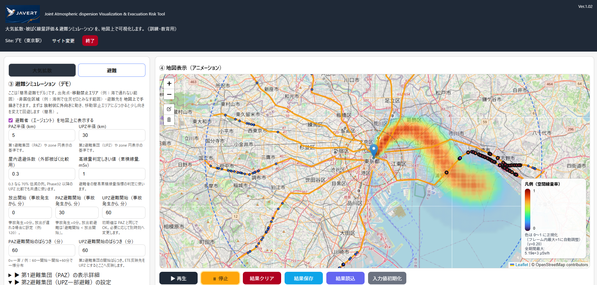

JAVERTとは
JAVERT は、放射性物質の拡散と住民避難の関係を、 地図上で視覚的に理解するためのシミュレーションデモです。
この無料版は教育・概念理解用であり、実際の防災判断には使用しません。

この無料デモでできること
- 東京駅を起点にした拡散イメージの表示
- 避難のタイミングや経路の比較
- 規格化した影響指標の可視化
デモ・お問い合わせ
ご注意
本ページは試験公開版です。内容は今後変更される場合があります。
東京駅を放出点に固定した、拡散と避難の教育用デモページ
JAVERT は、放射性物質の拡散と住民避難の関係を、 地図上で視覚的に理解するためのシミュレーションデモです。
この無料版は教育・概念理解用であり、実際の防災判断には使用しません。

本ページは試験公開版です。内容は今後変更される場合があります。